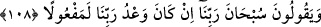
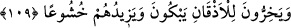

Beyzâvî şöyle der: “Secde eden kişinin yüzünün yere gelen ilk bölümü olması
sebebiyle âyette “ezkân (çeneler)” zikredilmiştir. Kelimenin başındaki harf-i târif
secdeye kapanmanın Allah’a mahsus olduğunu ifâde içindir.”
Müftî Sa‘dî, Hâşiyesinde şöyle der: “Secde eden kişinin yüzünün yere ilk gelen
kısmı alnı ve burnu olduğu açıktır. Ancak ‘Onların secdeleri bildiğimiz secdeden
farklıydı’ denirse o başka.”
Fakir (Bursevî) der ki: Burada Beyzâvî’nin “yere gelen ...” sözünün anlamı, secdeye
giderken çenenin yere burun ve alından daha yakın olmasıdır. Çünkü yere kapanma
durumunda yere en yakın olan diz, sonra eller, sonra da baştır. Başın yere en yakın
bölümü çenedir. Secdeden kalkarken yukarıya en yakın; yâni yerden ilk kaldırılan baştır.
Başın da en yakın bölümü; yâni yerden ilk kaldırılan kısmı ise alındır.
108. Ve derlerdi ki: Rabbimizi tesbih ederiz. Rabbimizin vaadi mutlaka yerine
getirilir.
“Ve” secdelerinde “derler ki: Rabbimizi tesbih ederiz.” Kâfirlerin yalanlamalarından
veya geçmiş kitaplardaki Muhammed (s.a.)’i göndereceği ve O’na Kur’ân’ı indireceği
vaadini tutmamaktan münezzehtir, pâk ve yücedir. “Rabbimizin vaadi mutlaka yerine
getirilir” Kesinlikle gerçekleşecek, mutlaka olacaktır. Çünkü vaadini tutmamak bir
eksikliktir. Bunun Allah için söz konusu olması muhaldir.
Fakir (Bursevî) der ki: Anlaşılan o ki bu vaad, yukarıda geçen Mûsâ ile Firavun
kıssası ve öncesindeki Kureyş’in yeniden diriltilmeyi inkâr hikâyesinin de delâlet ettiği
gibi âhiret vaadidir. En doğrusunu Allah bilir.
109. Ağlayarak yüz üstü yere kapanırlar. (Kur’an okumak) onların saygısını
artırır.
Allah korkusuyla “Ağlayarak yüz üstü kapanırlar” Yüz üstü yere kapanmanın tekrar
edilmesi, sebepler farklı olduğu içindir. İlki Allah’ın emrini tâzim içindir. İkincisi ise
Kur’an’ın öğütlerinin onlara te’sir etmesi sebebiyledir. Abdullah b. Ömer
(r.anhümâ)’dan Hz. Peygamber (s.a.)’in şöyle buyurduğu rivâyet edilmiştir: “Duâ ve
niyaz ile Allah’a yalvarın ve ağlayın. Çünkü gökler, yer, güneş, ay ve yıldızlar Allah
korkusuyla ağlarlar.”
Kur’ân’ı dinlemeleri, “onların” ilimlerini ve Allah’a kesin îmanlarını artırdığı gibi
“saygısını artırır.” Huşûunu artırır. Huşû, tevâzu ve tazarru, yalvarmak demektir. Bil ki